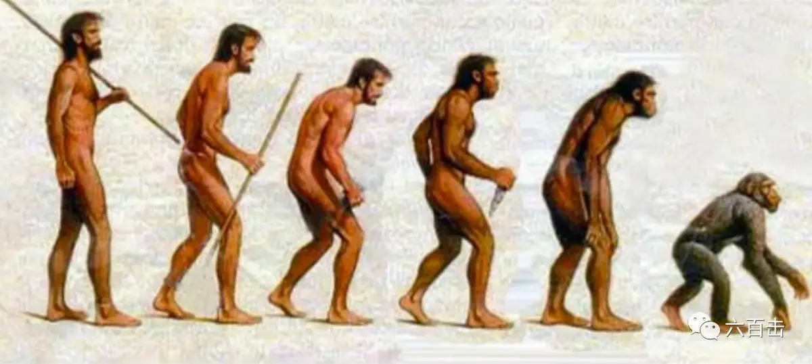
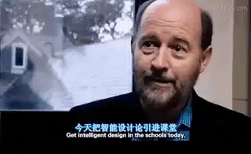
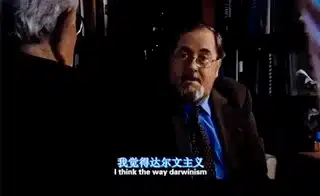
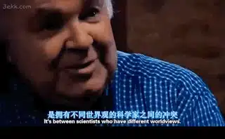

在野蛮人中，身体或者思想的弱点，会很快被消灭，我们这样的文明人，相反，尽力阻止这种消灭过程我们为智障者，残疾人和病人修建庇护所，因为文明社会的弱者，一直都存在，没有一个处于统治阶级的人，会否认这对于人类来说，是很危险的行为，几乎没有人会这么无知。我们会允许他们中最低级的人繁衍后代
————查尔斯.达尔文《人类起源》
关于进化论，我的记忆只有八个字，“物竞天择，适者生存”，如果再使劲想一想，还能挤出“自然选择”这四个字，如果你继续问我，我只能用这张图打发你

进化论基本上成为了不言而喻的权威，即使我从来没有读过《物种起源》。而生物学界最新的发现，我好像也没有听说，也没有太大的兴趣，不过最近看到的一部纪录片却引发了我的疑问和思考，虾哥也把这部优秀的纪录片推荐给大家，它的名字叫《驱逐智能设计论》
它是一部独立影片，以自由的言论对达尔文进化论提出了质疑。这部电影是一个控诉，也是一个警钟。它控诉美国思想界压制任何向“达尔文进化论”提出批判的科学理论。一位科学家不论有多少成就，如果他胆敢从科学研究的立场对进化论提出质疑，他就“大限”已到，遭受到学术上的打压和放逐的命运，包括职位升迁遭到拒绝，或是被学术机构解聘。
而这部纪录片的起因，是美国著名作家本.斯坦发现他的朋友理查德.斯坦贝——一位进化生物学家，他因为谈及智能设计论而被开除，这引起本.斯坦的疑问，以自由精神作为灵魂的美国，为什么在科技领域没有质询的自由？
采访者本.斯坦除了作家的身份，同时是律师、演员和政治经济议题名嘴，曾是美国总统理查·尼克松和杰拉德·福特的演讲稿撰稿人，并因此成名。他怀着这个疑问，访问了许多顶尖生物学家、物理学家、哲学家以及生物史专家，他发现他朋友遭到的打压并非个别现象。
生物学博士卡罗琳.克罗克，仅仅因为在她的细胞生物课上提到了“智能设计论”，她前途光明的学术生涯结束了，她不仅被学校开除，并且上了“黑名单”，在任何地方都找不到工作了
神经外科医生迈克尔.艾格 ，提出“如果我们在神经手术中假设，我们研究的大脑源于“偶然”的话 我们是学不到什么东西的”，他对于达尔文进化论的批评让他收到了很多邮件骚扰。
曾发现好几个行星的天文学家冈萨雷斯，因为他的新书《优势星球》中说宇宙是智能的设计，他的任教期结束了
为什么这样？本.斯坦去走访了反对智能设计的科学家，以理查德.道金斯为首的科学家给出的回答是，他们无法接受智能设计论是一种科学理论，他们认为任何对于进化论的质疑都是无知的表现.他们似乎对于智能设计论有着非常的警觉，他们觉得今天在课堂上讲智能设计论，明天神父就可以进入课堂了！

可是，他们给出的反对意见显然无法让本.斯坦信服，那些质疑进化论的人可都是学识非常渊博的科学家，那么智能设计论究竟是怎么一回事？
坚持智能设计论的科学家，认为这个世界并不是处于偶然，而是更高智慧的设计，甚至，进化论本身并不与智能设计论冲突，进化也可能是智能设计的一部分。而进化论本身也存在很多的问题

和分子生物学家乔纳森.韦尔斯，认为达尔文主义者，滥用证据，扭曲了证据，进化论就好像一个充满烟雾的房间，理论中没有什么是精确度的，清晰的，仔细定义的 或者是仔细描绘的。我们甚至不知道到底什么是“物种”。
达尔文主义是在生命出现之后去研究生命的，只讨论现有生物的问题，达尔文的理论是从第一个细胞出现后开始的，当时的达尔文对于细胞的认知非常有限，如果达尔文认为是细胞是一个基本单位，而现在最新的研究认为细胞是一个银河。
科技如此发达，至今我们造不出一个细胞
我们如何从无机世界发展到细胞世界的呢？在细胞产生之前，生命的关键化学元素，氧、氢、碳和氦，需要什么才能结合他们呢？你能相信刚好将这些元素恰当正确的结合的力量是偶然的么？按照进化论自然选择的理论，概率几乎为零
纪录片中有更加直观有趣的动画短片，来表现这个概率问题
所以从概率的角度，这些科学家宁愿相信细胞是被精密设计出来的，由此可见，智能设计理论也是基于实事求是的科学研究，并不是道金斯等人口中所说的“宗教”
那么，既然双方都有证据支持各自的理论，为什么不能平等对话呢？这个问题，使得本.斯坦将关注点从科学研究转移到社会政治中。
首先，最直接的是社会机构，为什么学校、科研机构会如此“直接”的报复这种权威的挑战呢？本.斯坦走访了科学国家教育中心，也就是美国的教育部，对方表示，随着进化论的普及，它已经成为了科学教育的标准，即使它受到质疑和争议，对于任何挑战和破坏秩序的人，他们都会被将其“拉黑”
另一方面，如果你要进入一个有声望的科研机构或学校，核心概念就是不能容忍不同想法，这就是“潜在规定”，任何不同意见的人都会被排挤，所以很多人在进化论的质疑上保持沉默
那么新闻工作者呢？为什么没有报道生物界最新的发现和智能设计论呢？记者界的朋友告诉本.斯坦，媒体的立场是站在机构的立场，对于进化论和智能设计论他们有样板文件。
相同的句子出现了10年，记者从来都不去报道智能设计论最新的发现，导致公众对智能设计论一直停留在过去的水平，智能设计论没有受到“公平的”对待，而如果报道的话，记者和报纸就会有很大的压力
那再往上呢，法院是什么样的态度，本.斯坦非常悲哀的发现，法院有“政治正确”的审查，虽然没有明说，对于智能设计被驱赶的现状，也只能睁一只眼闭一只眼
当访问到了这个地步的时候，本.斯坦意识到了横亘于科学界的这堵“柏林墙”，他不禁疑问，既然智能设计论有着坚实的科学根基，达尔文支持者为什么拒绝对话呢？
两者之间的冲突，并不是科学上的冲突，而是拥有不同世界观的科学家之间的冲突，那么达尔文主义的魅力在哪里？

而对于这个问题，诉诸于历史会看的更清楚，本.斯坦发现，相信进化论的科学家都会走向排斥宗教，也就是说进化论会导向无神论，而天堂梦想被进化论破碎以后，建造人间天堂的乌托邦梦想就被合理化了，而达尔文主义是这个梦想的重要理论根基
希特勒显然被这个梦想吸引了，普林斯顿大学的戴维·伯林斯基告诉本.斯坦，纳粹主义和达尔文主义非常相似，即使达尔文主义不是纳粹主义的充分条件，也一定是他的必要条件
过去说犹太人低等没有理论基础，现在科学告诉当时的德国，那些政治敌人，首先他们在生理上是低等的，所以希特勒把屠杀犹太人的罪行，理所当然当成了促进人类素质提高的“圣战”。
而除了纳粹，美国曾经也是这个乌托邦梦想的先驱，正是因为达尔文主义的理论支持，美国在医学史上发生了最黑暗的一幕，当时一些人，为了保证子孙后代的良好基因，对几万妇女强行绝育，因为他们素质低，不适合生育
达尔文主义触角更是伸向现代社会的方方面面，如今无数人对于任何一个有社会污点的人，都可以痛下决心，大家都会从经济的角度来看待人类，正是这样的“科学”思想，大家对于安乐死和堕胎司空见惯。这在过去都是对生命的巨大亵渎，如今科学让之合理化了
同时达尔文主义，更是让无数人杀死了伦理至高点，抛弃了生命的终极价值，放弃了人类自由意志
“你今天还在，明天就消失了，如果你相信进化论，你不会奢望自由意志，根本就没有希望，人类的生命有什么更深层的价值，我们活着，死去，然后就消失了”，更多的人跌入的虚无之中。
进化论和达尔文主义在历史上确实给人类带来了深重的灾难，本.斯坦来到达尔文的雕塑前想：如果达尔文看到他的理论被人当作杀人工具的时候，作何感想
经过如此深入的访谈之后，纪录片最后，本.斯坦与进化论的死粉理查德.道金斯展开了对话，最终我们发现，他对于进化论的相信也只是出于相信，并没有缜密科学数据和研究的支撑，甚至道金斯也相信智能设计，只是不愿意接受而已。
这部纪录片由一个科学问题，逐渐追问到社会问题，再到思想问题，甚至信仰问题，让我们更加深刻的了解到美国科技发展中的世俗性
在现代社会发展中，信仰逐渐被人们从科技、经济、政治的话语体系中驱赶出去，理由：是为了保持立场上的客观，而这个思想本身也是一种偏见。
彼得伯格认为，“技术社会倾向于培养高度实用和深度怀疑的认识风格，这一思维风格的实用特征归因于科学和技术以实事求是的态度面对对象世界。其怀疑特性透露出如下假设，即认识世界的科学方法高于其他一切方法。
这一独特的认识风格，不仅是科学家和工程师们的特征，而且在某种程度上也体现了所有技术产品使用者的态度，简短一点说，技术实用主义和科学怀疑主义导致有时被称为“科学至上主义”的观点，即阻止人们相信一切还尚未用科学加以证明的事物。
并于此相反，决不怀疑一切带有现代科学和技术印记的事物，科学至上主义遮蔽了科学和技术发展在道德上的模糊性，也阻碍我们在伦理上反思它，因为它假设科学和技术具有确定不疑的实证价值，坚信科学和技术的发展按本质而言就是善良的。但是这个潜设是不是要打一个问号？”
这不正是道金斯等人的思想根源，看似客观冷静，实则对世界的看法充满了偏见，而承认我们的偏见，是我们可以真正理性思考的开始。
正如纪录片中一位科学家的洞见“科学与宗教并不是对立的，如果你相信上帝，而且相信，宇宙中有一种固定的秩序，而且你相信那就是科学的作用，去试着追求那个秩序，更好地理解他，这难道会阻碍科学思维的发展？牛顿、伽利略等科学家不就是例子么。
我相信科学给我们 看世界的一个视角，我们的宗教观点给我们另外一个角度，两者结合，我们会看的更深刻更清楚”
美国这些年也认识到了其中的问题，政治上，特朗普宣布废除不允许教会参政的约翰逊修正案，信仰的声音可以在政治领域发声，毕竟完全没有任何价值观倾向的思想表达是不可能的，既然这样，信仰为什么不能发声？
而这段时间在上映的《银翼杀手2046》中的反乌托邦表达，更是表现出西方人对于“非人化”的现代世界的的担忧。
影片最后，将本.斯坦的演讲和柏林墙倒塌时里根的演讲剪辑在一起，画面和演讲内容互相交融，表达出本片的希望——将科学领域中的“柏林墙”推倒
电影对我们国人的提醒不仅止于此，我们更需要的是本.斯坦那样对于问题的重视和真相的追求，对真相漠不关心，我们又怎么会喜欢真理呢？如果我们正视每个社会问题，我们才能够进步，和稀泥只会让每个人和整个社会越来越油腻虚伪。
关注并回复： 驱逐智能设计 获取电影资源
相关阅读：
请收藏转发 | “宗教改革”电影大全，一同纪念500年前的今天（内有资源）
不刷这篇影评，你看不懂《银翼杀手2049》
《乡愁》 | 没有一个人能够将信仰拍的如此诗意和凝重
一个唯科学主义者的悲剧
这里没有挑逗你眼目情欲的小鲜肉
也没有挑动你肉体情欲的段子
更没有膨胀你今生骄傲的鸡血
我们只在乎那些最质朴真诚的作品
在那里我们才能恢复真正的想象力
我们也坚信这才是我们真正需要的

ID:Six_hundred_hits
长按二维码，一键关注
【六百击】
-END-
电影评论
尽情分享朋友圈

苹果打赏通道